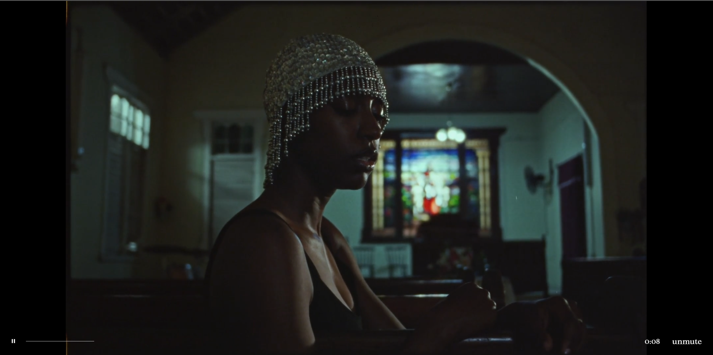
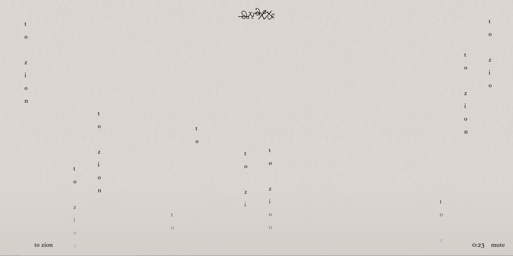
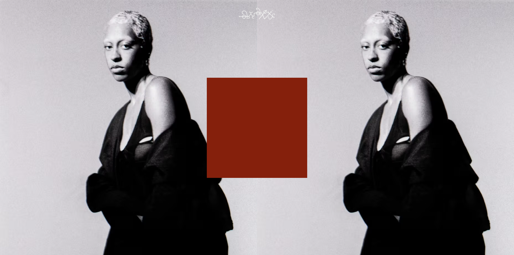
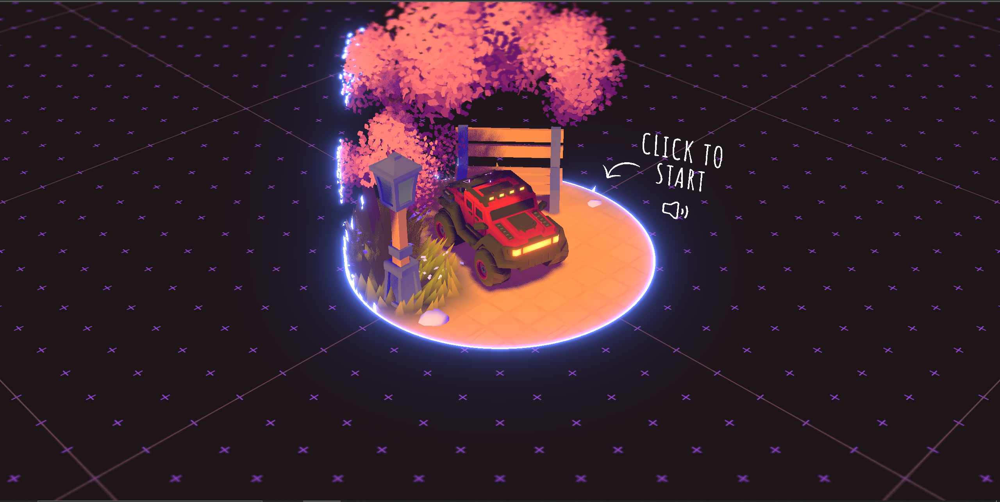
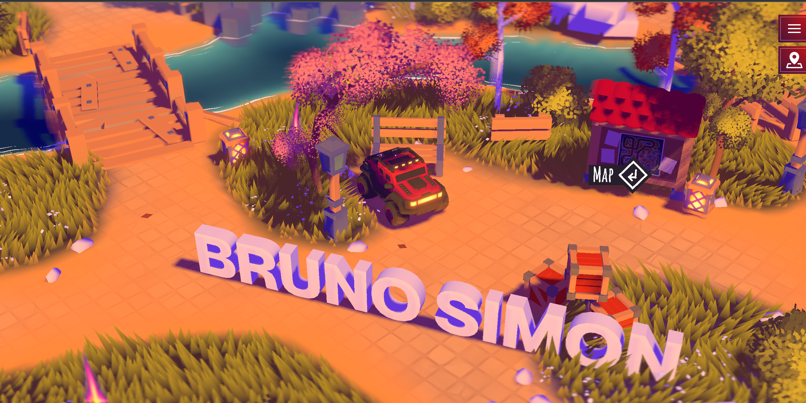
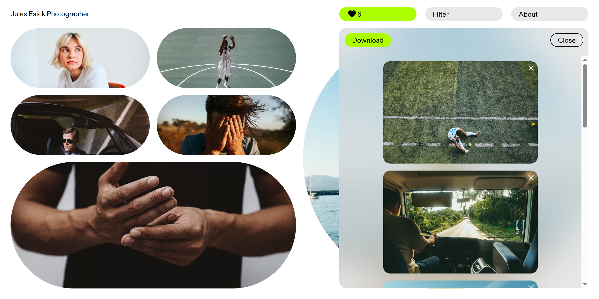
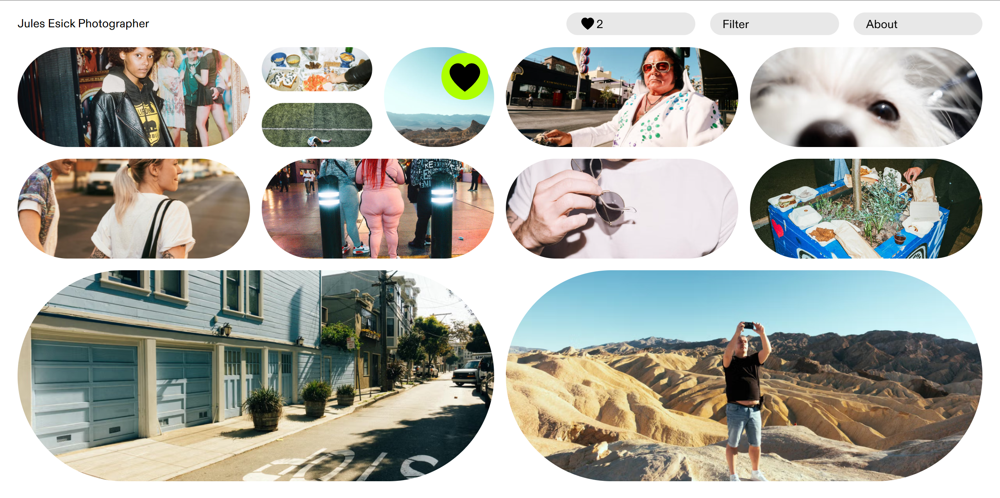
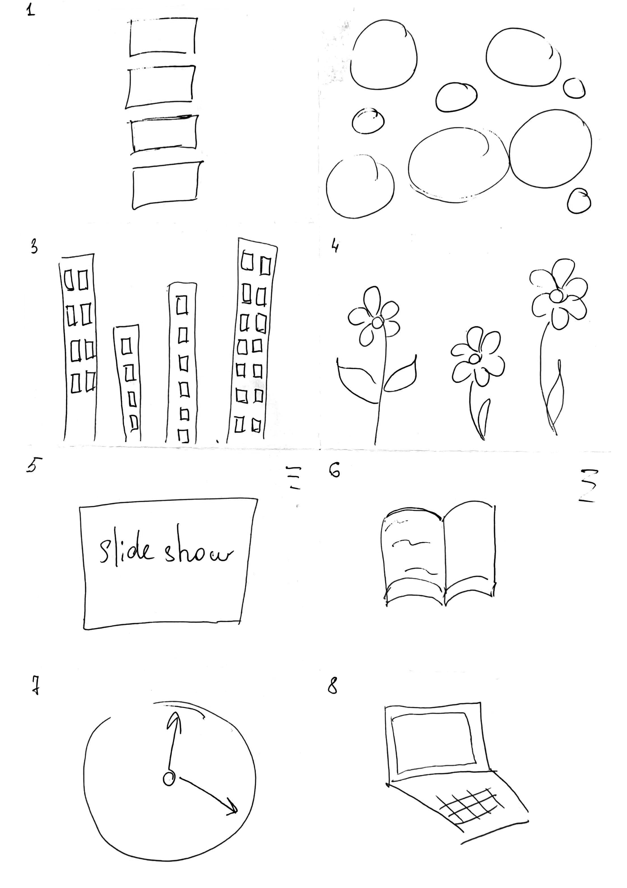

Research



Anaiis by OB STUDIO
anaiis.world can be described as a type of experimental portfolio where the artwork of the artist is showcased in a very visual and non-linear manner. Rather than using the traditional approach to layout, anaiis.world makes use of layers, emotional typography, and unusual navigation techniques that represent the personality of the artist.
The unique thing about the website is its focus on the expression of the artist over functionality. The website seems closer to an interactive experience with a piece of art as opposed to a regular portfolio, thus showing the web designing possibilities beyond simple information presentation.


BRUNO SIMON
The Bruno Simon website bruno-simon.com can actually be considered to be a gaming web-application, presented as a portfolio, with users having the opportunity to move around a 3D environment by means of controlling a car. As it seems quite interesting, what should be noted is that this is an innovative approach to developing a portfolio due to the fact that the website represents a gaming project with unique features. Thus, it was created with the use of technologies such as 3D and WebGL which proves the technical level of the developer. Nevertheless, what is even more valuable about this design is the fact that websites do not always need to conform to the principles of user experience.


Jules Esick Photographer
julesesick.com seems like an interactive portfolio site for a creative individual with simple designs, and subtle animations and transitions. Not very innovative in terms of design, the site still finds a nice middle ground in between creativity and usability. One interesting feature about this website is how it has focused on details like animations and fonts; small interactions which increase user satisfaction. This is definitely one example of a realistic take on creative web design.
Workshop

In this particular workshop, the idea was to brainstorm rapidly on interfaces through the process called "Crazy 8s", considering various possibilities for the use of websites like workbooks, other than typical webpage designs. The session challenged participants to consider websites not just as spaces, but also in terms of narratives or interactions, using visual metaphors like books, slideshows, clocks, flowers, and cityscapes. In the pin-up session, we discussed the implications of interface structure for user interaction with information.
For the prototype paper designing session, I used my "city skyscrapers" idea. This interface design visualizes the workbook at night time as the city, where windows are lit up as clickable projects/experiments that the person can visit. Once clicked on a lighted-up window, the camera moves to the particular apartment/room where there is the content of the project within.